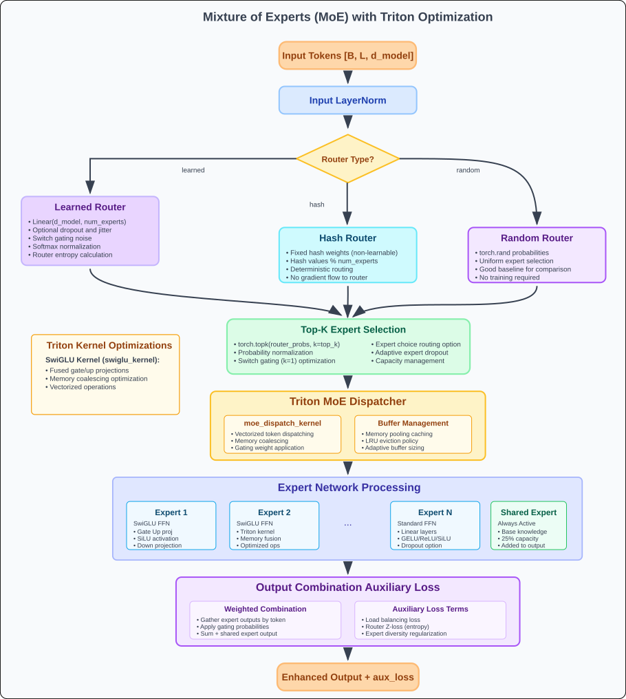

MoE Guide¶
ForeBlocks integrates Mixture-of-Experts into the transformer feedforward path through MoEFeedForwardDMoE.
You typically do not instantiate this block directly. Instead, you enable MoE through transformer constructor arguments.
Related docs:

How MoE is enabled¶
from foreblocks import TransformerEncoder, TransformerDecoder
encoder = TransformerEncoder(
input_size=8,
d_model=256,
nhead=8,
num_layers=4,
use_moe=True,
num_experts=8,
top_k=2,
)
decoder = TransformerDecoder(
input_size=1,
output_size=1,
d_model=256,
nhead=8,
num_layers=4,
use_moe=True,
num_experts=8,
top_k=2,
)
At the transformer layer level, the FFN block switches from dense feedforward to the dMoE-style routed block.
Mental model¶
The current implementation splits experts into two groups:
- routed experts
- optional shared experts
The router assigns tokens to routed experts, while shared experts can provide a dense path that is combined with the routed result.
Core MoE controls¶
Routing capacity¶
use_moenum_expertsnum_sharedtop_kmoe_capacity_factorrouting_mode:token_choiceorexpert_choice
Router type¶
Supported router families in the implementation include:
noisy_topkadaptive_noisy_topklinearst_topkcontinuous_topkrelaxed_sort_topkperturb_and_pick_topkhash_topkmulti_hash_topk
Router behavior¶
router_temperaturerouter_perturb_noiserouter_hash_num_hashesrouter_hash_num_bucketsrouter_hash_bucket_sizeexpert_choice_tokens_per_expert
Expert structure¶
use_swigludropoutexpert_dropoutd_ff_sharedshared_combine:addorconcatmoe_use_latentmoe_latent_dimmoe_latent_d_ff
Training and scaling¶
use_gradient_checkpointingmoe_aux_lambdaz_loss_weight
Important implementation note about balancing¶
The current code still exposes load_balance_weight, but the classic dense load-balancing auxiliary loss is intentionally removed in the implementation. Expert utilization is handled primarily through router expert-bias adaptation.
So in practice:
z_loss_weightis still meaningfulmoe_aux_lambdastill scales the transformer-level accumulated auxiliary lossload_balance_weightis not the main balancing mechanism in the current implementation
That means the first tuning knobs should be:
- router type
top_krouting_modez_loss_weight- capacity
not load-balance loss weight
Routing modes¶
token_choice¶
This is the default path.
- each token chooses its top experts
- dispatch capacity pruning is applied afterwards
- usually the best place to start
expert_choice¶
In this mode experts choose tokens instead of tokens choosing experts.
Use it when:
- you want more explicit expert-side control over token allocation
- token-choice routing collapses into a small subset of experts
Current caveat:
routing_mode="expert_choice"does not supportrouter_type="adaptive_noisy_topk"
Shared experts¶
The block supports optional shared experts through:
num_sharedd_ff_sharedshared_combine
This is useful when you want:
- a stable dense pathway in addition to sparse routing
- less aggressive specialization
- a fallback shared representation
shared_combine="add" is simpler and cheaper. shared_combine="concat" is more expressive but increases projection cost.
Latent MoE¶
The implementation also supports a latent-MoE path inspired by Nemotron-style designs.
Instead of routing full-width token states directly into the experts, the MoE block can:
- project tokens from
d_modelinto a smaller latent width - run router scoring in that compressed space
- execute routed experts in the latent space
- project the routed result back to
d_model
Main controls:
moe_use_latent=Truemoe_latent_dimmoe_latent_d_ff
Why this is useful:
- you can increase expert count without paying full-width expert cost
- router and expert compute both become cheaper
- the rest of the transformer can stay at the original
d_model
Current implementation behavior:
- shared experts still run at full
d_model - routed experts and the router use the latent width
- if
moe_latent_d_ffis omitted, the routed FFN width is scaled automatically from the originald_ff
Latent-MoE example¶
encoder = TransformerEncoder(
input_size=8,
d_model=256,
nhead=8,
num_layers=4,
use_moe=True,
num_experts=16,
num_shared=1,
top_k=2,
router_type="noisy_topk",
moe_use_latent=True,
moe_latent_dim=64,
moe_latent_d_ff=256,
)
Recommended presets¶
Stable baseline¶
encoder = TransformerEncoder(
input_size=8,
d_model=256,
nhead=8,
num_layers=4,
use_moe=True,
num_experts=8,
num_shared=1,
top_k=2,
router_type="noisy_topk",
routing_mode="token_choice",
z_loss_weight=1e-3,
moe_aux_lambda=1.0,
)
Efficiency-oriented¶
encoder = TransformerEncoder(
input_size=8,
d_model=192,
nhead=6,
num_layers=3,
use_moe=True,
num_experts=6,
num_shared=1,
top_k=1,
router_type="linear",
routing_mode="token_choice",
)
Higher-capacity experimental setup¶
encoder = TransformerEncoder(
input_size=8,
d_model=384,
nhead=8,
num_layers=6,
use_moe=True,
num_experts=16,
num_shared=2,
top_k=2,
routing_mode="expert_choice",
moe_capacity_factor=1.5,
z_loss_weight=1e-3,
use_gradient_checkpointing=True,
)
Latent-MoE higher-expert setup¶
encoder = TransformerEncoder(
input_size=8,
d_model=384,
nhead=8,
num_layers=6,
use_moe=True,
num_experts=32,
num_shared=1,
top_k=2,
routing_mode="token_choice",
router_type="noisy_topk",
moe_use_latent=True,
moe_latent_dim=96,
)
Advanced features in the current implementation¶
Adaptive top-k¶
adaptive_noisy_topk can vary the effective number of experts selected per token.
This path also tracks per-token k statistics and supports a REINFORCE-style adaptive-k loss internally.
Hash routers¶
hash_topk and multi_hash_topk are available when you want routing diversity without a standard learned dense router over all experts.
Grouped expert kernel path¶
The implementation can use grouped expert kernels and fused top-k routing in favorable runtime conditions.
You usually do not need to tune these first. They are lower-level performance details rather than primary modeling controls.
MTP heads inside MoE¶
The MoE block supports optional multi-token-prediction heads:
mtp_num_headsmtp_loss_weight
This is an advanced decoder-side path and should be treated as research functionality, not a default production setting.
Integration with ForecastingModel¶
from foreblocks import ForecastingModel
model = ForecastingModel(
encoder=encoder,
decoder=decoder,
forecasting_strategy="transformer_seq2seq",
model_type="transformer",
target_len=24,
output_size=1,
)
Recommended tuning order¶
- Start with
num_experts=8,num_shared=1,top_k=2,router_type="noisy_topk". - Decide whether
token_choiceis sufficient before tryingexpert_choice. - Tune
z_loss_weightif router logits become unstable. - Adjust
moe_capacity_factorif too many tokens are dropped by capacity pruning. - Scale expert count only after the routing pattern is healthy.
- If you need more experts at similar cost, enable
moe_use_latentand choose a smallermoe_latent_dim.
Troubleshooting¶
- Few experts appear active: first try a different router or routing mode; do not assume
load_balance_weightwill fix it in the current implementation. - Training is unstable: reduce
top_k, lower router noise, and keepz_loss_weightnonzero. - High memory usage: reduce
num_experts,d_model, or enable gradient checkpointing. - Slow inference: prefer fewer experts, smaller
top_k, and simpler routers while benchmarking. adaptive_noisy_topkwith expert choice errors: that combination is intentionally unsupported.- Latent MoE is not taking effect: make sure
moe_use_latent=Trueandmoe_latent_dim < d_model.